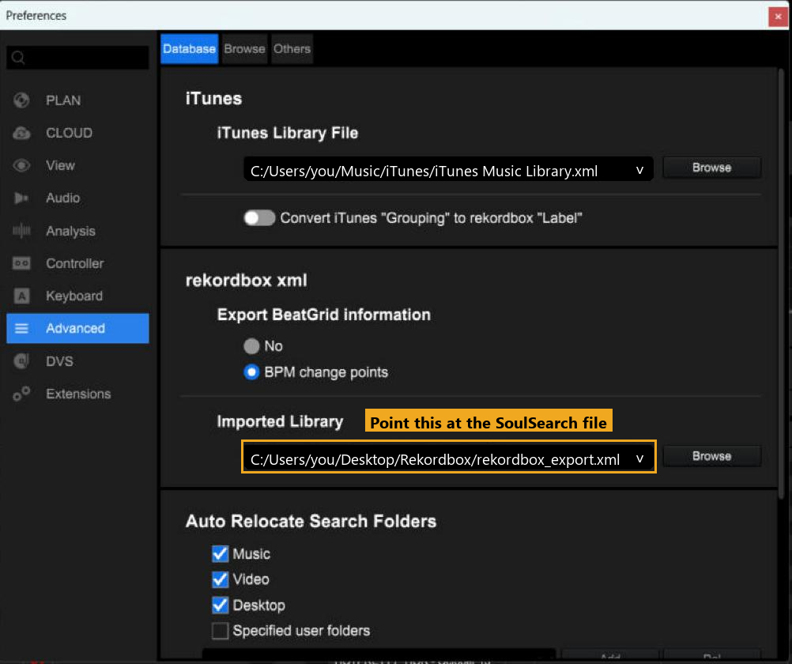
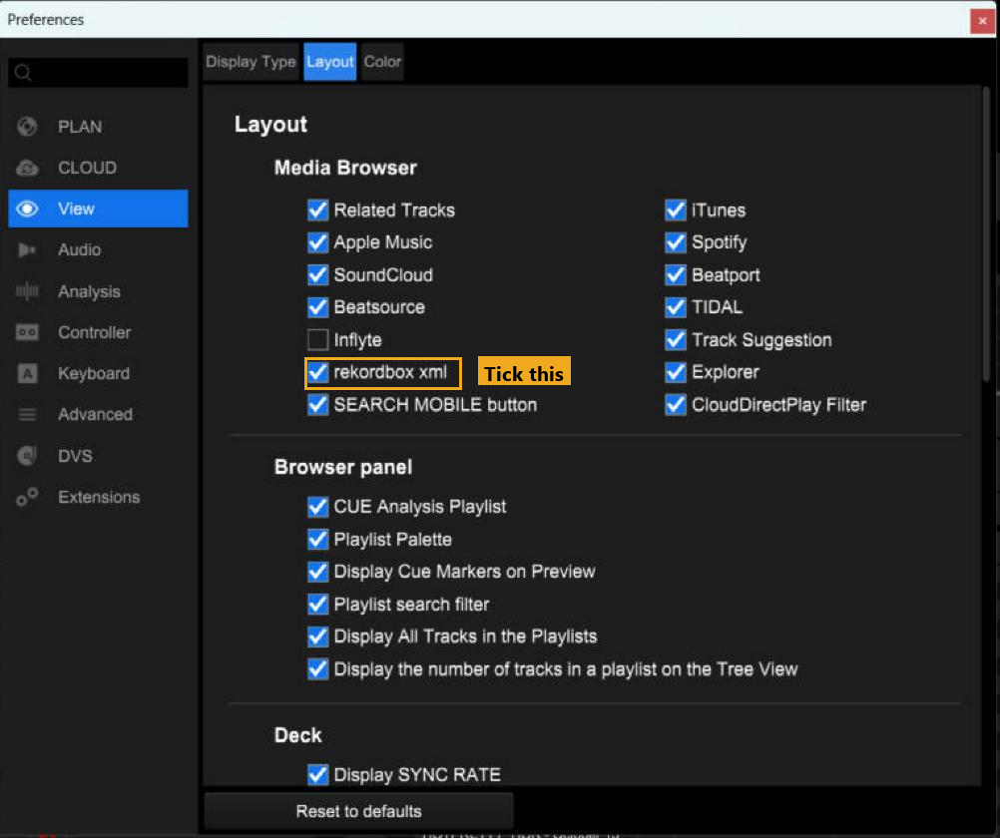
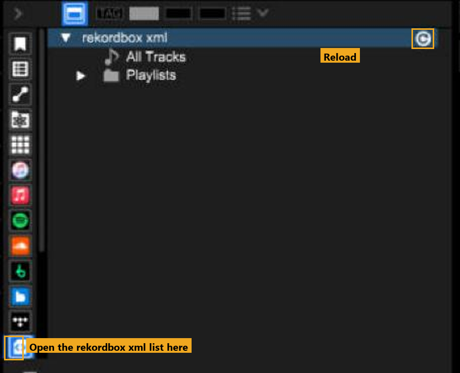
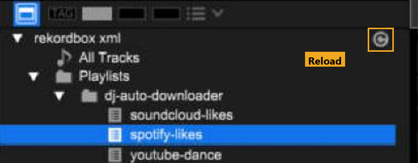
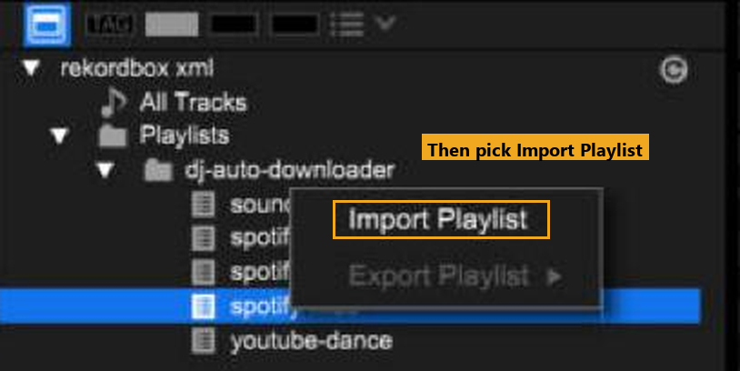

SoulSearch
SoulSearchSetup guide
The app's Settings page walks through this in order, top to bottom. This is the same thing with the reasons. Most of it is one-time.
Your computer won't recognise the app yet, because it isn't signed. That's normal, and you only do this once.
Windows
- Your browser may say SoulSearch.exe isn't commonly downloaded. Choose Keep (in Edge, the three dots, then Keep, then Keep anyway).
- Open SoulSearch.exe. If Windows says Windows protected your PC, click More info, then Run anyway.
- A Windows Firewall box may ask about slskd, the Soulseek program SoulSearch runs. Allow it on Private networks.
Mac
- Unzip the download and drag SoulSearch into Applications. Always open it from Applications, not from Downloads, or updates won't work.
- Right-click it, choose Open, then Open again.
- Still blocked? Go to System Settings, Privacy & Security, scroll down and press Open Anyway (macOS 15 and newer).
- A Keychain box may ask to let SoulSearch use your saved passwords. Choose Always Allow, so it doesn't ask every time.
Rekordbox folder
Settings, 1. Rekordbox folder. Pick the folder where downloads go. Each source gets its own folder next to it, which becomes its own playlist in Rekordbox.
Soulseek
Settings, 2. Soulseek is one line. If it says it isn't installed, press Install once. That fetches slskd, the Soulseek program SoulSearch drives, from its official source. Nothing to sign up for: the first time it starts it makes a private login of its own and keeps the password in your computer's secure store. The login boxes are tucked under Advanced, for if you'd rather use an account you already have.
ffmpeg
Settings, 3. ffmpeg. Needed for SoundCloud and YouTube downloads, including your SoundCloud likes. One click on Install.
Quality: your order of choice
Settings, 6. Quality, is a ranked list: 1st choice, 2nd choice and so on, up to five. The same boxes are on the Dashboard, on the Downloads card.
- FLAC can only be your 1st choice. FLAC files are three to four times the size of an MP3.
- Each MP3 after that has to be lower than the one before, for example MP3 320, then 256, then 192.
- The last choice can be SoundCloud / YouTube. That is what's tried when Soulseek has nothing. Leave it off and a track Soulseek doesn't have is just marked as missing.
Soulseek is always tried first.
Speed
Tracks at once, in the same place (and on the Dashboard). The default is 3, so big lists finish about three times sooner. 1 goes one track at a time. Go much above 3 and Soulseek may slow you down.
Which job goes first
The Dashboard has a Download order card. When several things are waiting (a daily sync, a Back Up, a crate dig) you pick which kind goes first, and Switch now moves it up straight away.
Spotify
This one takes a few minutes. Spotify makes everyone register their own free developer app to read their own likes and playlists.
- Go to developer.spotify.com/dashboard, log in and press Create app. Any name and description.
- Under Which API/SDKs are you planning to use? tick Web API.
- Set the Redirect URI to exactly
http://127.0.0.1:8888/callbackand add it. It has to be the loopback IP address.localhostis not allowed. Tick the terms box and Save. - Open the app's Settings, then copy the Client ID and Client Secret into SoulSearch's Settings page (4. Spotify).
Two things to know. New Spotify apps start in “development mode”, and Spotify requires the account that owns the app to have Spotify Premium. Only the owner needs it, and you are the owner. A development-mode app allows up to 5 people, which is plenty, because it's your own. If Spotify answers with a 403 error, open the app's Settings, then User Management, and add your own Spotify name and email.
SoundCloud
No account or key. Paste your public profile link.
YouTube
No account or key. On the Sync page, add playlists that are public or unlisted. Add as many as you like.
Apple Music and Shazam
On the Sync page, paste a shared Apple Music playlist link, or import a file.
- Apple Music: in the Music app on a Mac (or iTunes on Windows), click a playlist, then File, Library, Export Playlist. Export Library does everything.
- Shazam: in Shazam on your iPhone, go to My Music, connect Apple Music and turn on Sync your songs. They show up in Apple Music as My Shazam Tracks. Export that playlist the same way.
SoulSearch shows what's in the file before it downloads anything.
SoulSearch writes a file called rekordbox_export.xml. The Sync page shows where it is. Rekordbox reads your SoulSearch playlists from that file, so you point it there once.
1. Point Rekordbox at the file
In Rekordbox: File, Preferences, Advanced, then the Database tab. Under rekordbox xml, click Browse next to Imported Library and choose rekordbox_export.xml.

2. Make the list show up
Still in Preferences, open View, then the Layout tab. Under Media Browser, tick rekordbox xml. Close Preferences.

3. Open the list
Down the far left edge of the library there is a strip of small icons. Click the last one. The rekordbox xml list opens, with All Tracks and Playlists under it.

Rekordbox only reads the file when it opens, or when you press Reload. If you skip this, new tracks will not show up.
1. Press Reload
On the rekordbox xml row, press the small circle arrow on the right. That is Reload. Restarting Rekordbox does the same thing.

2. Import the playlist
Open Playlists, then dj-auto-downloader. Each source has its own playlist, named after its folder. Right-click the one you want and choose Import Playlist.

3. If it asks to replace
Rekordbox may say a list with the same name already exists and ask to replace it. Choose Yes. That is normal. Your new tracks are now in your collection and in that playlist.
Tracks still missing? See Troubleshooting.
Type a DJ, or one particular set, and SoulSearch finds the tracklists and fetches them. An AI does the research, and there are two ways to do it (Settings, 7. Crate digging, or just pick on the Crate Digging page):
- A free AI. This is the default. Nothing to set up. Press Copy research brief, paste it into ChatGPT, Claude, Gemini or any chat AI (switch on its web search or Deep research first), then paste the answer back and press Import. If the answer stops half-way, tell the AI to continue.
- Automatic, with Claude on this computer. If you pay for Claude and have Claude Code installed, SoulSearch can run the research itself with no copying. Install Claude Code, run
claudein a terminal once and sign in with/login, then choose Automatic. The Claude Desktop chat app on its own doesn't include Claude Code, so use the free option for that.
Either way you see what was found before anything downloads. A few extras:
- Edit the track list before downloading: tick it on the Crate Digging page to tidy the list first.
- Fetch missing tracklists: for sets that came back with no tracks, SoulSearch looks them up on MixesDB.
- Dig deeper: if you've dug that artist before, the free route offers a Dig deeper tick, which tells the AI what's already been found. Saved digs have a Dig deeper button too.